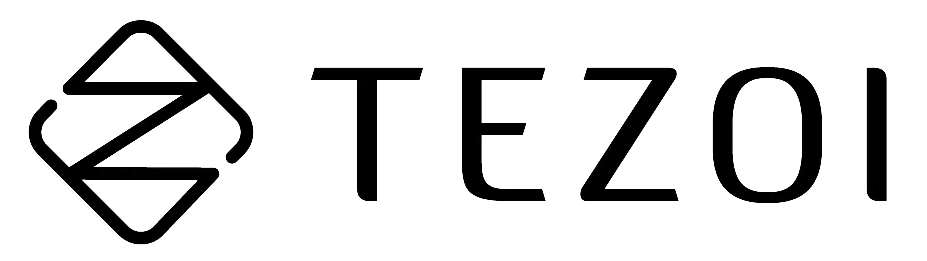

SimulationContact forces
拖动分界线对比画面，拖动进度条查看细节。
颜色表示接触力分布，并非压力或应力；夹持稳定性尚未达标。

查看演示以 Agent 连接 Ego 视频与仿真，将场景、交互与目标转化为环境和策略，再回到真实场景验证。
从外部 Ego 视频中理解场景、对象与操作目标。
Ego 视频待接入
First-person video真实环境与空间关系
对象、接触与操作过程
任务目标与子任务顺序
理解视频中的操作，重建可交互环境，生成与任务对应的动作轨迹和策略。
对象 · 接触 · 操作顺序
从 Ego 视频中识别对象、接触与操作顺序。
概念动画，非实际生成结果。Ego 视频与配套生成结果待接入。
独立仿真示例
拖动分界线对比画面，拖动进度条查看细节。
颜色表示接触力分布，并非压力或应力；夹持稳定性尚未达标。
拖动旋转，滚轮缩放，右键平移。键盘可用 Shift + 方向键旋转，加减键缩放。触屏：单指旋转，双指缩放与平移。
热点以透视方式和固定色标显示接触力，不代表压力或应力。原始仿真轨迹的夹持稳定性尚未达标。
将策略带回同一真实任务，对照 Ego 检查执行表现。
真实场景验证视频待接入
Real-world execution任务是否实际完成
动作与物理交互是否一致
面对场景变化的执行表现
Agent 展示转换流程，M12 为独立仿真示例；Ego 与实机验证视频待接入。
观察挤压、拧水与折叠中的形变、流动和接触响应。
一次倾倒触发连续碰撞，观察刚体间的动量传递。
Rigid contact / IPC接触载荷下的压缩与展开，以及卸载后的弹性恢复。
Elastic deformation / IPC线束在重力与碰撞作用下弯曲下垂，与支撑结构形成接触。
Deformable contact / IPC液体绕障流动，与容器和固体表面形成耦合响应。
Fluid–solid coupling凝胶表面的压入形变，与对应的接触力分布同步变化。
Gel deformation / Contact force基于物理计算的材料响应演示；参数尚未经实物标定。
夹持薄壳瓶体，观察瓶身形变与液体流出。
海绵吸水后经三次挤压排水，随后回置。
双臂抓取、对折并释放床单，展示布料接触与摩擦。
从点云到几何，再到光照材质，观察同一场景的视觉层次。
三维建模场景，点云由模型表面采样生成。
探索工业装配、实验操作、材料交互与运动控制中的仿真表现。
抓取一米柔性网线，完成插接锁止、重抓解锁与拔出。
双臂协同拾取内存条、对准插槽并压入，随后松爪撤离。
研究演示 · 任务效果待验证
抓取并调整螺母，以指尖旋拧完成预紧与卸载。
研究演示 · 夹持稳定性尚未达标
接触力对比双臂协同完成水瓶入盒、盒盖折叠与托盘放置。
双臂抓取、拉伸柔性胶圈，执行对准与入槽。
研究演示 · 部分装配条件未达标
抓取并定向刚性连接器，执行插入、释放与撤离。
研究演示 · 插接精度未达标
双臂协同取样、转移与称量，完成还勺和关门收尾。
研究演示 · 定量取样精度未达目标
机械臂依次取液、倾倒、搅拌并处理废液。
根据微滑反馈调整夹持力，提起并保持螺栓。
螺栓抓取中的凝胶形变、触觉分布与三轴力同步可见。
指端接触引起凝胶形变，触觉深度随之变化。
灵巧手抓取物体，结合指端接触、形变与触觉反馈。
四指依次点按，同步观察接触分布与力反馈。
对比轻捏后的弹性回弹与重捏后的塑性残余形变。
灵巧手从周转箱取出软体物体，观察包覆接触与形变。
双手协同抓取衬衫、穿入衣架，随后悬挂并释放。
布料沿静止机器狗的背部与四肢接触、垂落。
四足机器人连续行走，协调步态与足端地面接触。
人形机器人执行 Shuffle 舞步，协调步伐、躯干与双臂。
围绕视觉一致性、物理响应与任务迁移，评估仿真表现。
对照真实场景，评估几何、材质与光照的一致性。
结合接触、运动与形变结果，检验物理交互的仿真精度。
通过仿真数据训练与任务验证，评估对具身学习的支持。